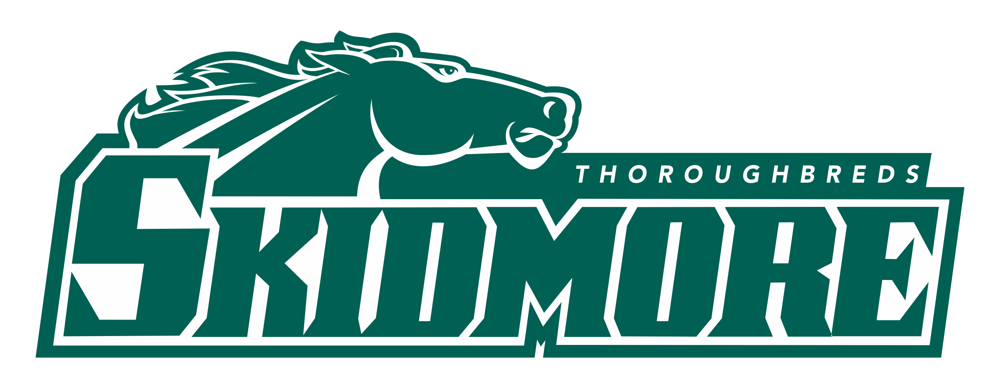

Spring 2026 · Tue Mar 31 → Mon Apr 6
Land 4:50 PM. Check in (3–9 PM). First dinner. Charlotte + Olivia.
Baths, ruin bars, Jewish Quarter. Prosecco Cruise at sunset (~6–7 PM).
City Park: Vajdahunyad Castle → Zoo Café → Széchenyi Baths. Or Buda side: castle, Fisherman's Bastion, Gellért Hill sunset.
Check out by 10 AM. Train to Vienna (~2.5 hrs). Temple joins! First evening all three.
Sights, coffeehouses, Saturday night out. All three.
Markets, Prater, wine tavern. Last night.
Check out by 11 AM. Brunch → Wien Mitte by 1 PM → VIE airport. Flight 4:10 PM.
Tue Mar 31 · CPH 3:00 PM → BUD 4:50 PM
Check-in Tue Mar 31, 3–9 PM · Check-out Fri Apr 3, 8–10 AM
Check-in Fri Apr 3, 3–9 PM · Check-out Mon Apr 6, 5–11 AM
Mon Apr 6 · VIE 4:10 PM → CPH 5:55 PM
ÖBB or MÁV · ~2.5 hrs · ~€15–25
Buda (west, hilly, castle) and Pest (east, flat, nightlife, ruin bars). Mostly in Pest. Daily rhythm: ~11 AM start, midnight finish.
"Sip & Sail" Sunset Cruise — 75 min on the water, 90 min unlimited Prosecco (sweet/medium/dry + cocktails). Parliament, Buda Castle, Chain Bridge lit up at dusk. Under €30/person.
Széchenyi (outdoor, iconic) or Gellért (art nouveau). ~€25 w/ locker. Go mornings.
Szimpla Kert (go before 10 PM). Instant-Fogas (massive). Élesztő (craft). Jewish Quarter walkable bar-to-bar.
Walk or funicular up. Bastion free (upper €6). Best Parliament views. Sunset.
Short steep hike, 360° city view. Best at sunset.
Stunning outside (lit at night). Interior ~€10 EU students.
Riverbank Chain Bridge to Parliament after dark. Shoes on the Danube memorial.
Iron-and-glass building. Lángos upstairs, paprika downstairs.
Fairy-tale castle in City Park. Romanesque/Gothic/Renaissance mashup. Pair with Heroes' Square next door.
Coffee shop with exotic animals — parrots, reptiles, hedgehogs. Fejér György u. 3 (District V). Open til 9 PM.
Skip Váci utca (tourist trap). Jewish Quarter (District VII) = where the action is. Lángos = mandatory.
Center (1st district) walkable. Ringstrasse loops around it. Fri PM: Meet Temple, sausage stand dinner, canal walk. Sat: Stephansdom, coffeehouses, one museum/palace, big night out. Sun: Naschmarkt, Prater, Heuriger wine tavern. Mon: Brunch → airport by 1 PM.
Free entry; south tower €6 for panorama.
Café Central (gorgeous) or Café Sperl (old-world). Melange + Apfelstrudel.
€16 (student discount?). Gardens free + great photos.
Park free; Riesenrad €14. Langos €3.
Biggest market. Street food, spices. Sat = flea market. Closes ~6 PM.
Tram to Grinzing. Local wine, cold buffet, fairy-lit gardens.
7th district (Neubau) = coolest area. MuseumsQuartier courtyard = free hangout. Skip Schönbrunn unless you love palaces.
Fill this in so we can plan around everyone's interests. Pick one per activity, rank your priorities, and answer the quick questions.
Your responses are recorded. Check the results below.